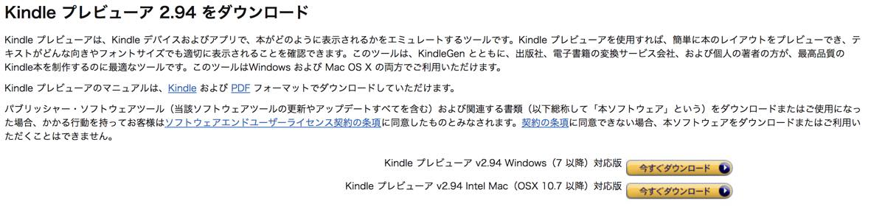

| MacでさっさとKindle本を出版する最短手順 (UG Books) | |
| Hello UG | |
| (2018) | |
はじめに
この本はMacユーザーの方がさっさと自身で書いてきた本を出せるように書いた本です。
Kindle direct publishingではWordファイルで入稿できるので、シンプルなままでも良いという方は書いてきたWordファイルをそのまま入稿すればすぐに出版できます。
しかしそれでは、縦書きにならなかったり、目次がついていなかったりと読む側にとって不便な本になってしまいます。
そこでこの本に書いてあることを実践して、Word形式のファイルを読みやすい形式にかえるための最短手順を示しています。
なお書いている内容は本日2018年3月現在の内容で書いていますので（内容変更が分かり次第更新します）、そのつもりでごらんください。
この本を手に取った方や、私に「本を書いてほしい」と言われた方々がどんどんkindleで本を出してくださることを望んでやみません。
二〇一八年三月吉日 東京にて Hello UG
まずはメモでもWordでもGoogleドキュメントでもなんでもいいから記事を書こう
Kindleでは書いた内容を後から修正が容易にできますし、最初の出版前の審査なども深夜でもやってくれます。
ついでに言えば、ペンネームや出版社名も自分で考えてつけることができます。
Kindle本を出版するにあたって、とにかく書くことが大事なので、とにかく書いていきましょう。
スマホアプリのメモで少しずつ書いていくのでも、WordやGoogleドキュメントを使ってガッツリ書いていくのでもどちらでも良いのでぱぱっと書いてしまいましょう。
また、写真があった方がより楽しいので、写真もカメラでバシャバシャとっておきましょう。
いらない写真は後で消せば良いんです。
この本では記事を書く内容まではお伝えできないので、まずはお好きなように書いてください。
書いた文章を装飾するためのソフトをダウンロードする
はじめにで書きましたが、Kindle出版はWordファイルをそのまま入稿することができます。
シンプルでもいいからとりあえず出したい、という方はとりあえず入稿しましょう！
入稿してから最大で72 時間以内には出版されます（実際は数時間で出版されます）。
もう少し目次とかつけて最低限の体裁を整えたいという方は、書いた文章をKindleがきちんと読み込めるように装飾していきましょう。
装飾するためにはWordやGoogleドキュメントではやりづらいので、別のソフトをダウンロードして使います。
Macにもともと備わっているテキストエディットやメモでも良いのですが、それだとKindleに対応していない装飾ができてしまうので、編集上邪魔になってしまいます。
Kindleできちんとこちらが思うような装飾をするためにはマークダウン方式という装飾を行う必要があるのです。
そのためにまずはSublime Textというソフトをダウンロードしましょう。
右上のDownloadのページを開き、上部にあるOS Xをクリックしてダウンロードします。
この際、Chromeの方はセキュリティのせいでかうまくダウンロードできない可能性があるので、その場合は、Safariでダウンロードしましょう。
そしてWordの文章をすべてSublime Textにコピーするのですが、その前にWord側で最低限の装飾を済ませておくほうが楽なので先にそちらをやってしまいましょう。
ちなみにテキスト形式のソフトはいろいろあるのですが、Atomとかちょっとよくわからないのが多かったので、少しのミスにも敏感なプログラマーさんとかがよく使っているSublime Textを利用するようにしました（使いやすいテキストソフトがあればなんでも問題ありません）。
Sublime Textの不具合を解消する
Sublime Textは一点、日本語ゆえの不具合があって、検索窓が日本語を受け付けなくなっています。
それをまずは直しておきましょう。
直すにはこちらのURLを参考にしてください。
https://gist.github.com/chibicode/ad1f50b3b191ee694556
ステップ1、ステップ2を実践すれば直ります。
Word内で最低限の装飾を済ませる
ここから先は、WordやGoogleドキュメントやメモなどとは書かず、Wordで統一させていただきます。
Wordで書いた方は最低限、見出しなどはつけていらっしゃるかと思います（つけていない方は見出し機能を使ってつけておきましょう）
その際、つける見出しは大見出し（Wordなどの見出し1か見出し2）、小見出し（Wordなどの見出し2か見出し3か見出し4あたり）の2つに分かれているかと思います。
細かく見出しをつけたいという方は、大見出し、中見出し、小見出しと分かれているかもしれません。
そのそれぞれの見出しの頭に#と半角スペースをつけていきましょう。
大見出しは#が一つと半角スペース、中見出しは#が二つと半角スペース、小見出しは###と半角スペースです（小見出しまで無い方は中見出しまでで大丈夫です）。
WordやGoogleドキュメントの方は見出し機能によって一覧で表示されるので#をつけやすいかと思います。
本の中で使う画像の大きさとファイル名を修正する
Kindleは文字だけでも出版することができますが、画像があった方が絶対楽しいので、画像はあるに越したことはありません。
読者にもイメージを伝えやすいので是非入れていきましょう。
画像入れ込み作業はWordなどのSublime Textに移行させる前の段階の方が入れやすいので入れていきます。
以下のような感じです。

画像をリサイズ
画像をリサイズするにはTh-MakerXというソフトを使います。
http://www5.wind.ne.jp/miko/mac_soft/th-maker_x/
前述のスイカのときの画像のような小さな画像なら良いのですが、大きな画像の場合は、縦2,560px × 横1,600px以下になるようにしたほうが良いでしょう。
Kindleの表紙でAmazonが推奨している大きさは縦2,560px × 横1,600pxなのでそれ以上大きくても圧縮されてしまう可能性があるからです。
解像度が高いと言われているiPhone Xでも解像度は2,436px × 1,125pxなので、スマホで見る分には問題ありませんし、一番大きなiPad Proでも解像度は2,732px × 2,048pxなのでほとんどカバーできます。
あまりに大きいと読み込むのに時間がかかりますし、推奨している大きさまでにしておきましょう
Th-MakerXのリサイズモードをフィットにして幅1,200高さ2,560と入力します。
出力フォーマットはJPEGにしておきましょう。
画像にウォーターマーク（画像盗用を防ぐために画像内に文字をいれたりすること）を入れたい場合は右下の「ウォーターマークを付加する」にチェックを入れて設定してください。
保存先はオリジナルと同じにしておきましょう。
以上の設定が終わったらWord内にある画像を全てTh-MakerX上にドラッグ&ドロップします。
Word内の画像を取り出すには
WEBとか画像フォルダとかから適当に取り出しただけだから画像は管理していないわ！という場合には以下の方法でWord内の画像を取り出すことができます。
まずFinderでWordファイルをコピーします（Command + Dを押したらすぐにコピーされます）。
その後、そのファイルの拡張子を.docxから.zipに変換します。
zipになったらそのファイルを解凍し、中にあるwordフォルダの中のmediaフォルダの中にWord内で使った画像がすべて入っているのでこれを移動させましょう。
解凍ソフトによってはうまくいかないので、うまくいかない場合は、「The unarchiver」というソフトを使って解凍しましょう。
https://itunes.apple.com/jp/app/the-unarchiver/id425424353?mt=12
画像をリネーム
後ほど修正していくKindleに読み込ませるためのマークダウン方式では、画像のファイル名を文章内に入力する必要があります。
それ故、ファイル名がごちゃごちゃだと文章内に入れづらいです。
そこで名前を一括変更するにはiMage Toolというソフトを使います。
https://itunes.apple.com/jp/app/image-tools/id493949693?mt=12
このソフトはファイルのリネームができます。
なぜかウォーターマークをつけようと思ったらアプリが落ちるので評価は低めです笑。
ちなみにこちらにもリサイズ機能はついているのですが、指定した大きさに強制的に大きくなるので、拡大しなくていい画像も拡大されてしまうので、リサイズは先に紹介したTh-MakerXを使うようにしましょう。
iMage Toolにリネームしたい画像ファイルをすべて入れて、右の柱の中のRenameにphotoと入力して下のNumberという文字をドラッグして入力枠に持っていきます。
そしてNumberの文字の右についている下向き▽ みたいなボタンを押して、00 を指定します（画像が9枚未満であればこの設定は不要です）。
そしてスタートを押せば、指定したフォルダ内にリネームされた画像が出てくるのでこれでOKです。
ちなみにすでにWord本文中に貼ってある画像と置き換える必要はありません。
画像を置き換えていく
画像が文章内にある方はこの段階で修正しておくのが良いでしょう。
Sublime Textに文章をコピペしてしまうと、画像がすべて消えてしまいますので、この段階で修正した方がどこにどの画像があるかというのがわかりやすいからです。
マークダウン方式の画像の入力は画像の説明部分以外はすべて半角で入力します（例としてここで入力すると画像が表示されてしまうのでこんな感じで掲載させてください）。
画像の説明はなしでも大丈夫です！その場合は、空白など開けずに入力します。
画像は本文が入っているところと同じフォルダに入れておきましょう。
こんな感じで、画像のすぐ近くにそれに対応する画像の名前を入力していきます。
Sublime Textに文章を移していく
これ以降は、Wordなどは使わずにこのSublime Textで文章を編集していきます。
Wordの本文をすべてコピーしてSublime Textにすべて貼り付けます。
その後、すぐにCommand + Sで保存してください。
ファイル名にはbookname.txtとしてください（booknameはなんでもいいですが半角ローマ字で入力します）。
箇条書き
箇条書きは頭に*（アスタリスク）と半角スペースを開けます。この時注意したいのが箇条書きの前後は空行を開けるということです。
この空行を開けるというのがWordではやりづらいため、Sublime Text上で作業します（Wordはフォントなどが途中で急に変わり、空行なのかただ行間が大きいフォントなのかが判断しづらいためです。そんなことない人はWordで編集しても問題ありません）。
太字の強調
太字の強調は強調したい部分を**アスタリスク二つでかこってあげます。
アスタリスク一つだと、変な強調がされますので、ダブルで使いましょう。
半角スペースは不要です。
リンク
ウェブ上にリンクさせたい場合は、
このように記述すると、「こちら」がリンクになって、その後に指定したURLに飛ぶということができます。
書いた記事をマークダウン方式に変換する（.epubに変換）
装飾は以上で最低限できたので、今度は書いてきたテキストと画像をまとめて変換します。
変換するにはでんでんコンバーターというWEBサービスを利用します。
https://conv.denshochan.com/
アップロードしてねのところに.txtのファイルと、.jpegのファイルをまとめてドラッグ&ドロップします（ファイル選択で選択してもOK）。
そして本のタイトルと作成者を入力します。
Kindleで出版する時の名前と同じにする必要があるので気をつけてください。
ページ送り方向は右から左縦書きを選択肢、その他はそのままにして、下の変換ボタンを押します（プレビューにチェック入れちゃうとプレビューしかできないので注意）。
変換ボタンを押すと、.epubというファイルができます。ファイル名はデタラメな英数字になっています。
これを次はKindleに対応している形式に替えましょう。
Kindleに出版できる方式に変換する（.mobiに変換）
いよいよ作業は大詰めです。
Kindle Previewerをダウンロードしましょう。

https://www.amazon.co.jp/gp/feature.html?ie=UTF8&docId=3077677546
Kindle プレビューアと書いてある方をダウンロードしましょう。
インストールしたKindle Previewerを起動しようとすると、エラーが出てきてJava6をダウンロードしてくださいと出るので、ダウンロードしましょう。
リンクはそのエラーメッセージにありますが、見逃した方は以下からダウンロードします（リンクが切れている場合があるので、エラーメッセージから飛んでください）。
https://support.apple.com/kb/DL1572?locale=ja_JP
これでKindle Previewerが使えるようになりました。
起動したら、Kindle Previewerに先ほどできた.epubのファイルをドロップします。
すると以下のウインドウが出てくるので、真ん中のHereをクリックします。
すると、.mobiのファイルができているので、それをKindleにいよいよアップロードします。
Kindle direct publishingにアップロード
いよいよです！
https://kdp.amazon.co.jp/ja_JP
新しい本を作成というところをクリックして、手続きページにいきましょう。
項目は基本的には書かれているとおりに入力すれば良いです。
本のタイトル
本のタイトル、サブタイトルを日本語、カタカナ、ローマ字で入力します。
ローマ字に関しては、日本語をローマ字にしただけでも結構ですが、私はなんとなくGoogle翻訳にタイトルを入れてみて、それっぽい英語に修正して入力しています。
https://translate.google.co.jp/
シリーズ
シリーズものであれば、タイトル、巻数などを入力します。
版
版は1と入力しておきましょう。
次大きく変更があった時にここを2にします（誤字修正ぐらいならそのままの版でも良いかと思います）。
著者欄
著者欄も本のタイトル同様に入力します。
著者等はとりあえず空白で良いでしょう。
内容紹介はまずはざっくりと
内容紹介に関しては、私は「はじめに」の部分を抜粋して入れるようにしています。
「表紙」と「内容紹介」は購入していない人がAmazon上でこの本がどんなものなのかを判断する時に見るものなので非常に重要ですが、これは後でも変更できるからです。
出版に関して必要な権利は「私は著作権者であり、出版に関して必要な権利を保有しています。」を選びます。
キーワード
キーワードは思いつくその本に関するキーワードを入力しましょう。
検索されるためにもここはできるだけ埋めておきましょう。
カテゴリー
少し厄介なのがカテゴリーです。
非常に膨大な数のカテゴリーがあるので、ちょっと探しづらいのですが、今販売されている同じような本のAmazon売れ筋ランキングあたりを見て、大カテゴリーぐらいは判断できるので、それで入力しましょう（検索機能がほしいところです）。
デジタル著作権管理 (DRM)
デジタル著作権管理 (DRM)は有効にしましょう。
よくわからないかもしれませんが、要は本の内容を簡単に盗まれないようにする技術を適用するかどうかの質問です。
ネットで検索すると、解除しようとしている人たちの為の記事が沢山出てきます。
やっておいて損はないでしょう。
ページめくりの方向
右から左（縦書き）にします。
好みにもよるのですが、ほとんどの人があなたの本を「縦に持ったスマホ」で読むと思いますので、通常は縦書きが好ましいでしょう。
英語がメインの本なら横書きでも問題ありませんが、日本語で横書きは読みづらいと個人的には思っています。
スマホ用に縦で動画配信をしているサービスや人がたくさん出てきているので、やはり縦のスマホを意識すると良いのではないでしょうか。
本の表紙は縦2,560px × 横1,600px
こちらは先述していますが、表紙は縦2,560px × 横1,600pxが推奨されていますので、これで入力しましょう。
私はPhotoshopを使って、ネットで購入した画像をベースに文字入れをしています。
今すでに出ている本の表紙などを参考にしながら作ると良いでしょう（丸パクリはダメです）。
プレビューアー
両方共正常にアップロードできたら、その下のプレビューアーを起動して本のできを見てみましょう。
ここで見られる本のできはほぼ出版されたものと変わらないと思ってよいでしょう。
不具合あってもとりあえず出しちゃう心持ちが重要です。
すべてが完璧な状態なんてありません。
しっかり誤字を確認したつもりでも出版後に見つけたりしますので、都度修正してみればよいのです。
Kindle 電子書籍 ISBNは空欄で
Kindle 電子書籍 ISBNの部分は空欄で結構です。
KDP セレクトへの登録
しましょう。販売拡大することができます。
ロイヤリティも高く設定することができるようになります。
出版地域は世界
世界中で販売しましょう。すべての地域を選択します。
日本語圏以外の人は基本的には日本語の本を読みませんが、写真集などであれば読まれる可能性はありますし、海外のAmazonを利用している日本人も手にとる可能性はあります。
ロイヤリティと価格設定
ここも深く考えずに70 %にします。
Amazonで独占販売を90 日間認めるとかそういうことを同意すればロイヤリティ70 %を貰えるので、深く考える必要はありません。
他のところにも出したい！という方は35 %にすればよいかと思いますが、私なら90 日待ってから他のところに出します。
また99 円など安くしてしまうと、ロイヤリティも低くなって35 %に設定されてしまいます。
ロイヤリティは
99
円〜249円は35
%
250円〜が70
%
であるため、今後も執筆活動を続けていく上でも、250円以上が望ましいでしょう。
主なマーケットプレイスをAmazon.co.jpにして、希望小売価格を設定します。
そうすると全世界のAmazonが日本のAmazonで設定した価格に準じた価格になります。
価格の付け方は人それぞれだけど300円以上にしてみませんか
価格は自由に設定していいかと思いますが、300円以上で出してみてはいかがでしょうか。
無名の作者の本を買う人は金額がいくらであれあまりいません。
あなたの本を読む方はKindle Unlimitedにて無料で読む方がほとんどです。
Kindle Unlimitedには一度にダウンロードできる本に制限があり、いっぱいになった時にあなたの本が削除され、また別のKindle Unlimitedの本をダウンロードするでしょう。
その時、あなたの本を定期的に読みたいと思った読者は購入してくれますし（Kindle Unlimitedでまたダウンロードする方もいるでしょう）、作者には続編を書いてほしいから応援したい！と思った人も購入してくれるでしょう。
せっかく買ってくださった方がいても販売価格が99 円だとロイヤリティは32 円。
100冊売ったとしても、3,200円です。
百人も応援してくれたのに手元に入ってくるお金は3,200円。
これでは次の執筆意欲も湧きづらいし、取材などもしづらいです。
「お金には全く興味なく、より多くの人に私の考えを届けたいだけなんだ！」という方はもちろん安くして問題ありません。
ちなみにもしも300円で販売したのであれば、100冊売れば58200円もロイヤリティが入ってきます（ロイヤリティが70 %になるので1冊194円）。
約六万円あれば、次の本のモチベーションも高くなりますし、取材も行きやすくなります。
高画質なカメラに買い換えてよりよい本を読者に届けることもできるでしょう。
情報に対する対価を頂いて、さらに素敵な情報を提供する、執筆活動の醍醐味はここにあるのではないかと、昨日今日執筆を始めたばかりの私は考えています。
MatchBook
印刷物の本を持っていな人はチェックしなくて良いでしょう。
Kindle本を出版ボタンを押す
これですべての準備が整いました。
あとはこのボタンを押すだけです。
ここまできたらもうすることは出版した後でよいのでぱっと押してしまいましょう。
最初の出版は最大72 時間以内、修正は最大48 時間以内であることからも、Amazonは修正をして本を良くしてもらいたいという気持ちはあると思います。
さいごに
かなり駆け足でMacユーザーに本を書いて出してもらうための手順を紹介させていただきました。
今現在の情報（2018/03 ）で書いておりますので、一部違うところもあるかと思います。
そういうところは随時更新していく予定ですので、少し手順がわからなくなった、などの時にはこの本に戻ってきてくださるとうれしいです。
それではお互いたくさんの本を執筆しましょう！
お読みいただいてありがとうございました。
Hello UG